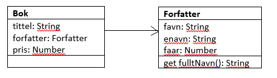
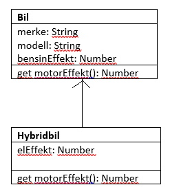
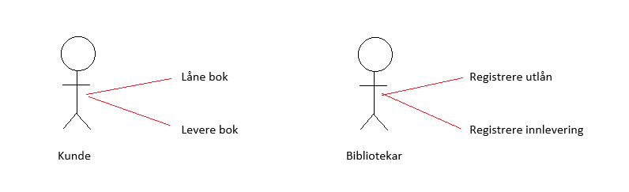

c) I denne oppgaven skal du opprette to klasser: klassen Sirkel og klassen Kule.
Klassen Sirkel skal ha konstruktørargumentet radius og en metode for å regne ut areal. Klassen Kule skal være en subklasse av Sirkel og arve radius fra denne. Metodene skal overskrives med areal og volum av kula. Du skal så legge til to sirkler og to kuler og skrive ut verdiene for omkrets og areal / areal og volum av disse.
Først: oppretter klassen Sirkel med ett argument to metoder
class Sirkel{
constructor(radius){
this.radius = radius;
}
get omkrets(){
return 2*Math.PI*this.radius;
}
get areal(){
return Math.PI*Math.pow(this.radius,2);
}
}
let s1 = new Sirkel(4);
console.log(s1.omkrets.toFixed(2), s1.areal.toFixed(2));
Deretter: oppretter klassen Kule med ett argument som en subklasse av Sirkel. Nå kan vi bruke både areal og omkrets på denne, men det blir jo feil
class Kule extends Sirkel{
constructor(radius){
super(radius);
}
}
let k1 = new Kule(4);
console.log(k1.omkrets.toFixed(2), k1.areal.toFixed(2));
Derfor overskriver vi slik at vi heller har korrekt arealmetode og legger til en volummetode.
class Kule extends Sirkel{
constructor(radius){
super(radius);
}
get areal(){
return 4*Math.PI*Math.pow(this.radius, 2);
}
get volum(){
return (4/3)*Math.PI*Math.pow(this.radius, 3);
}
}
let k1 = new Kule(4);
console.log(k1.areal.toFixed(2), k1.volum.toFixed(2));
Objektorientert utvikling handler om å planlegge, designe og programmere objektorienterte datasystemer. I planleggingen vil vi lage ulike modeller og diagrammer som er til hjelp i programmeringen ved å visuelt vise hvordan koden skal fungere.
UML = Unified Modelling Language er et metodesett for slike modeller, der man blant annet tar i bruk klassediagrammer og brukmønsterdiagrammer (use case).
Et klassediagram viser klassene i et datasystem med deres attributter og metoder samt sammenhengen mellom klassene: for forfatter-bok blir dette:

Klassediagrammet inneholder altså en tabell for hver klasse: klassenavn i en celle, objekter i en celle og metoder i en celle. Pilen representerer at klassen bøker inneholder objekter fra klassen forfatter.
Dersom vi har et sub-super-system tegner vi klassene under hverandre i stedet.
Oppgave:
Tegn klassediagram for bil-hybridbil.

Et bruksmønsterdiagram sier noe om hvordan et datasystem er tenkt brukt av hver aktør. For et bibliotek vil ulike aktører være bibliotekar og kunde:

HTML, CSS og JS i ulike filer
Har en index.html som fungerer som startside
Legger til css i head:
< link rel="stylesheet" type="text/css" href="mappenavn/filnavn.css">
Har ulike js-filer for ulik kode:
main.js er der vi oppretter nye objekter til klassen
filnavn.js (filnavnet vil være avhengig av klassene) er fila der vi oppretter klassen
Legger til js-filer i body
< script src="mappenavn/filnavn.js">< /script>
Lag en html-fil med et skjema der man kan legge inn fornavn, etternavn og telefonnummer. Dette skal lagres inn i en klasse.
Lag en js-fil der du oppretter klassen Kontakt. Klassen skal inneholde en metode for å returnere fullt navn og en metode for å skrive ut en tabell med fullt navn (ved hjelp av den første metoden) og telefonnummer samt en knapp for å slette kontakten fra klassen.
Lag en js-fil der du lagrer inputen fra feltene og oppretter objekter til klassen.
Det er meningen at dere skal måtte bruke litt tid på komme i gang med denne oppgaven, men det vil komme løsningsforslag (men ikke med en gang, dere skal måtte tenke litt først)
Bonus!
Dersom du ønsker å utforske lokal lagring for at det du skriver inn ikke skal forsvinne når siden lastes på nytt, kan du utforske local storage. En kort intro til dette er lagt ut rett under oppgaven, og løsningsforslaget tar i bruk dette. Dette er på siden av fagpensum, men veldig nyttig.
Local storage er en metode for å lagre data (tekst eller tall) lokalt i nettleseren. Vi lagrer data ved hjelp av nøkler:
localStorage.nøkkel = verdi;
Og henter ut data ved bruk av samme nøkkel:
var variabel = localStorage.nøkkel
Vi kan ikke bruke local storage til å lagre objekter videre fordi objekter ikke er string eller number. Derfor må data som skal lagres først gjøres om til tekst. Dette gjøres ved hjelp av metodene:
JSON.stringify (gjør om data til tekst)
JSON.parse (gjør om data fra tekst til opprinnelig dataformat)
Eksempel: har en array med figurer i Harry Potter:
var figurer = ["Harry Potter", "Hermione Granger", "Ron Weasley"];
figurerTekst = JSON.stringify(figurer);
localStorage.mineFigurer = figurerTekst;
var kjendiserOpprinnelig = JSON.parse(localStorage.mineFigurer);